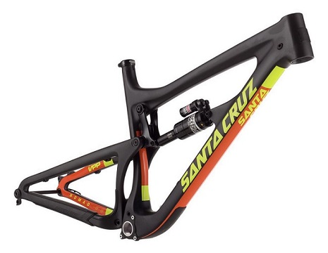
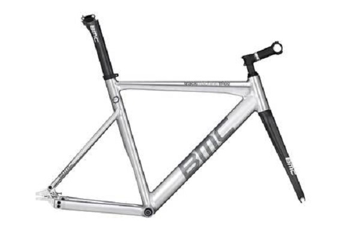
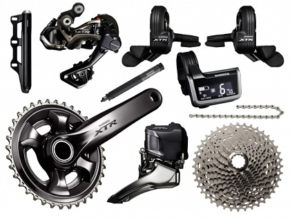
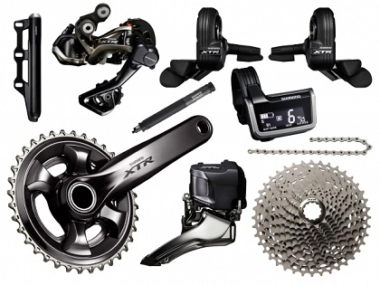
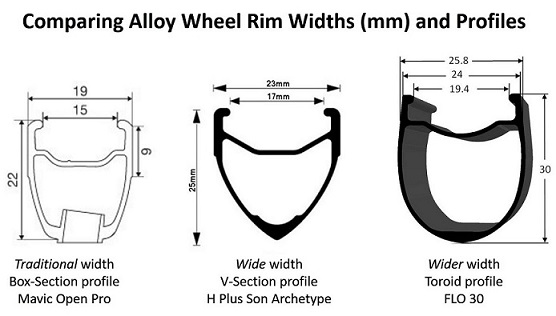
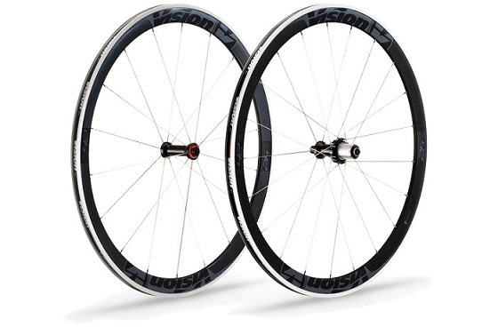

The bike frame is the main part of a bike; where all of the components are connected to. They come in many types and sizes, depending on the purpose of the bike. There are frames for mountain bikes, road bikes, track bikes, fixed gear bikes, cyclocross bikes, and more. All of these kinds of bike frames generally share the same pricipal in design: they are two triangles that form a truss.


Like all components for a bike, bike frames can be made with different materials. The most common these days are made from aluminum; specifically from 6061 aluminum alloy. Due to its vast availability, relatively low pricepoint, its lower weight, and higher tensile strength and lower ductility relative to steel, it is used frequently in modern bikes.
Another common material for bicycle frame manufacturers to use is steel and carbon fiber. Less common materials that are used include titanium and graphene. Steel is used less often today due to its higher weight, but boutique bike frame makers or custom frames will often utilize steel due to its highly ductile properties to create custom shapes and sizes. Some manufacturers will also use titanium or carbon fiber for custom made bikes as well.
The most prevalent material used in amateur and professional race bikes is carbon fiber. It's often used for high-end race bikes due to the intricate tube shapes carbon fiber layup can be used to create. Since thses bikes require certain properties such as being aerodynamically optimied for speed, higher stffness, vibration absorption, and comfort, carbon fiber is used.
The drivetrain is composed of parts that allow the rider to move the bike. These include the pedals, cranks, chainrings, chain, front derailleur, cassette, and rear derailleur. The front and rear derailleurs shift the chain into different gears.
Included in the groupset of a bike are the shifters and brake calipers. The shifters are used by the rider to shift between different gears. Sometimes the shifter will operate as both the shifter and the brake lever in the same shifter. This is usually the case for road, cyclocross, and triathlon bikes. The shifters can be operated mechanically with a cable, or electronically. Both methods use shift levers.
 

Similar to bike frames, bike wheels also come in different shapes, sizes and materials with different purposes. The two main materials bicycle wheels are made from are aluminum alloy and carbon fiber. Aluminum wheels are often more heavy and less aerodynamic, while carbon fiber wheels are often lighter and faster. The most common cross sections for aluminum wheels are box sections, v-sections, and toroidalally shaped wheels. The most common shapes for carbon fiber wheels are the v-section and toroidal design. Box section wheels are usually more comfortable and lively feeling, while v-section wheels are stiffer and faster. Toroidal wheels take the best of both wheels and are designed to be comfortable and maintain stiffness to sustain heavy torques and be optimized aerodynamically.
 
Here is a video of a professional bike race from Cycling News TV. This video shows the sprint finish from a first person perspective of stage five of the Tour de Suisse: